第五章 一元一次方程（高效培优单元测试·提升卷）
（考试时间：120分钟 试卷满分：120分）
一、选择题（本大题共10小题，每小题3分，共30分）
1．下列方程中是一元一次方程的是（ ）
A．
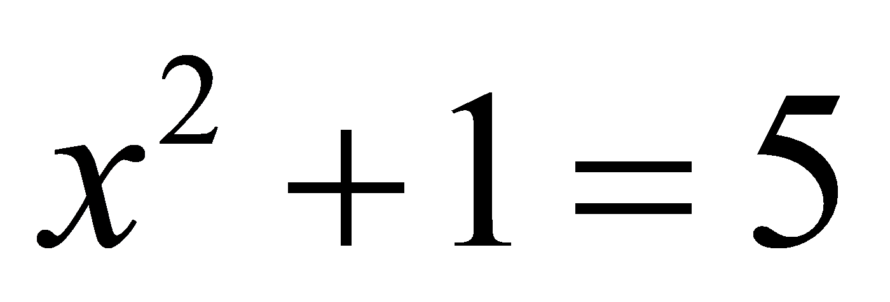
B． C．
C． D．
D．
2．若 与
与 互为相反数，则
互为相反数，则 的值为（ ）
的值为（ ）
A． B．
B． C．
C． D．
D．
3．已知 是关于的方程
是关于的方程 的一个解，则
的一个解，则 的值是（ ）
的值是（ ）
A． B．
B． C．
C． D．
D．
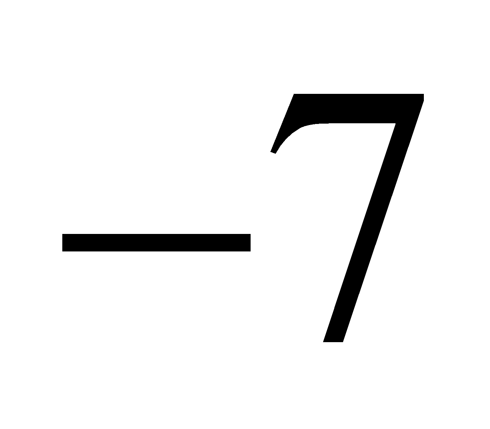
4．运用等式的基本性质，下列变形正确的是（ ）
A．若 ，则
，则
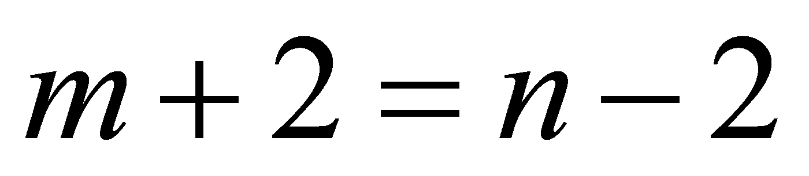
B．若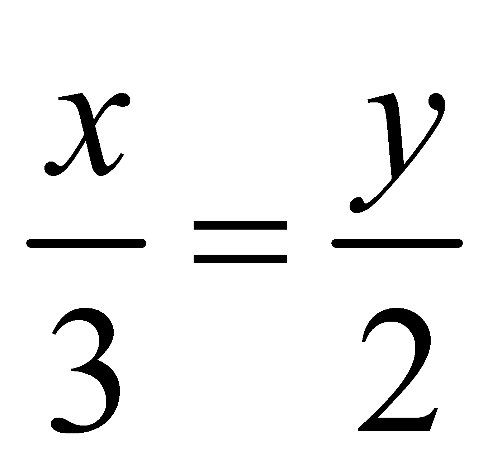
，则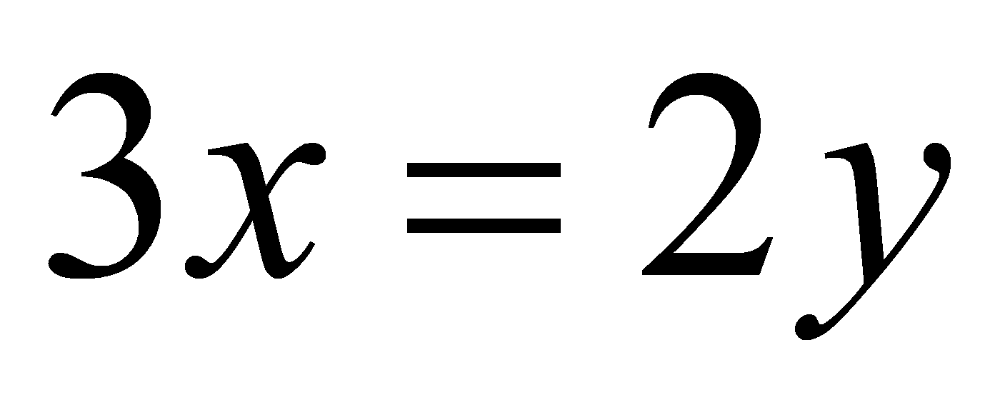
C．若 ，则
，则 D．若，则
D．若，则
5．下列方程变形正确的是（ ）
A．由
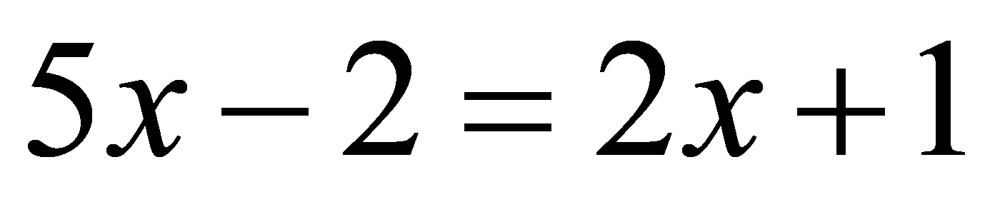
移项，得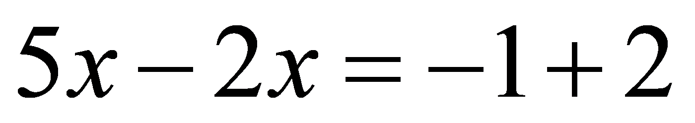
B．由 去括号，得
去括号，得
C．由 系数化为1，得
系数化为1，得
D．由
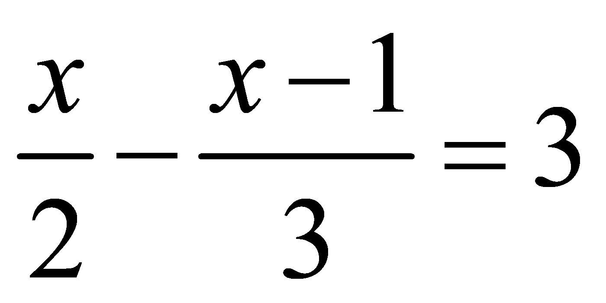
去分母，得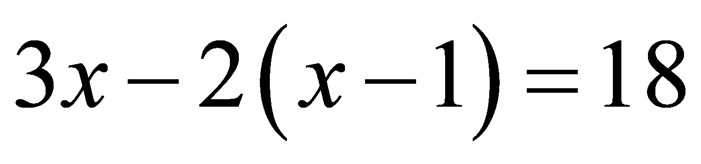
6．若方程 和
和 的解相同，则m的值为（ ）
的解相同，则m的值为（ ）
A． B． C．
B． C． D．
D．
7．我国古代名著《九章算术》中有一道阐述“盈不足术”的问题，原文如下：今有人共买物，人出八，盈三；人出七，不足四，问人数几何？原文意思是：现在有一些人共同买一个物品，每人出8元，还盈余3元；每人出7元，则还差4元，问共有多少人？如果假设共有人，则可列方程为（ ）
A．
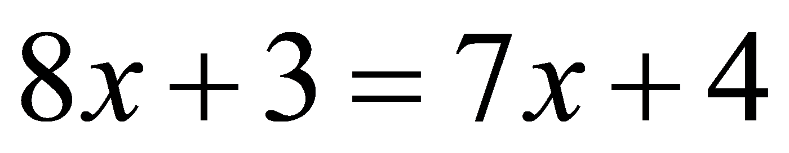
B． C．
C． D．
D．
8．已知关于的方程 有整数解，则的所有可能的取值的和为( )
有整数解，则的所有可能的取值的和为( )
A．
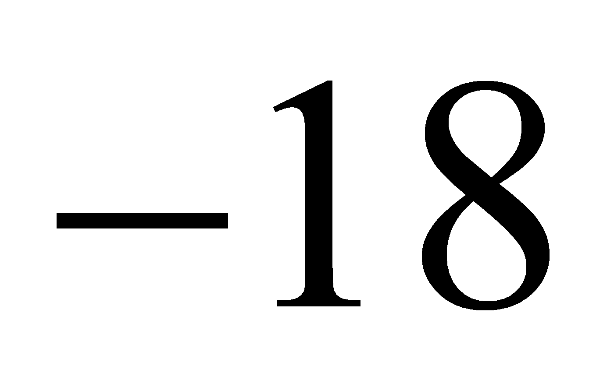
B． C．
C． D．
D．
9．下列结论：
①若 是关于x的方程
是关于x的方程 的一个解，则
的一个解，则 ；
；
②若
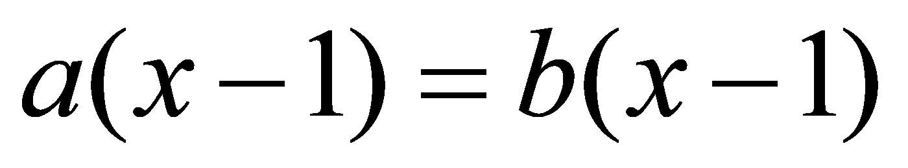
有唯一的解，则 ；
；③若 ，则关于x的方程
，则关于x的方程 的解为
的解为 ；
；
④若 ，且
，且 ，则
，则 一定是方程
一定是方程
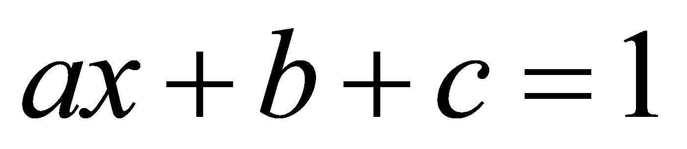
的解；其中结论正确个数有（ ）
A．4个 B．3个 C．2个 D．1个
10．幻方的历史很悠久，传说最早出现在夏禹时代的“洛书”（如图1），“洛书”是一种关于天地空间变化脉络图案，它是以黑点与白点为基本要素，以一定方式构成若干不同组合．“洛书”用今天的数学符号翻译出来就是一个三阶幻方（如图2）．三阶幻方又名九宫格，是一种将数字（1至9，数字不重复使用）安排在三行三列正方形格子中，使每行、列和对角线上的数字和都相等．
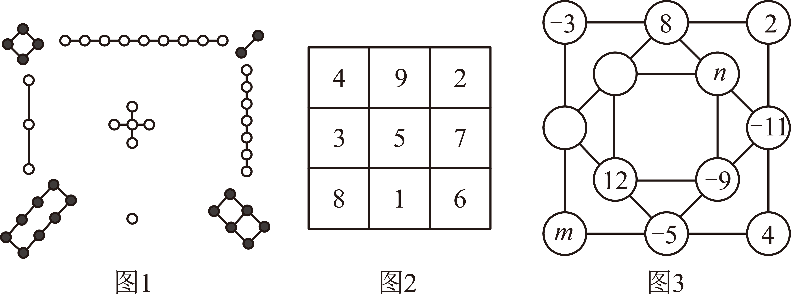
如图3，有3个正方形，每个正方形的顶点处都有一个“○”．将 ，，，，
，，，， ，
， ，2，4，6，8，10，12．这12个数填入恰当的位置（数字不重复使用）．使每个正方形的4个顶点处“○”中的数的和都为2．则
，2，4，6，8，10，12．这12个数填入恰当的位置（数字不重复使用）．使每个正方形的4个顶点处“○”中的数的和都为2．则 的值可以为（ ）
的值可以为（ ）
A． B．7 C．7或 D．或6
二、填空题（本大题共6小题，每小题3分，共18分）
11．如果
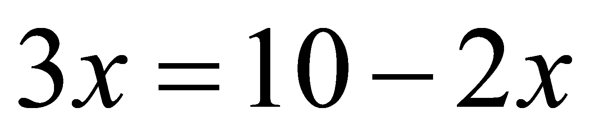
，那么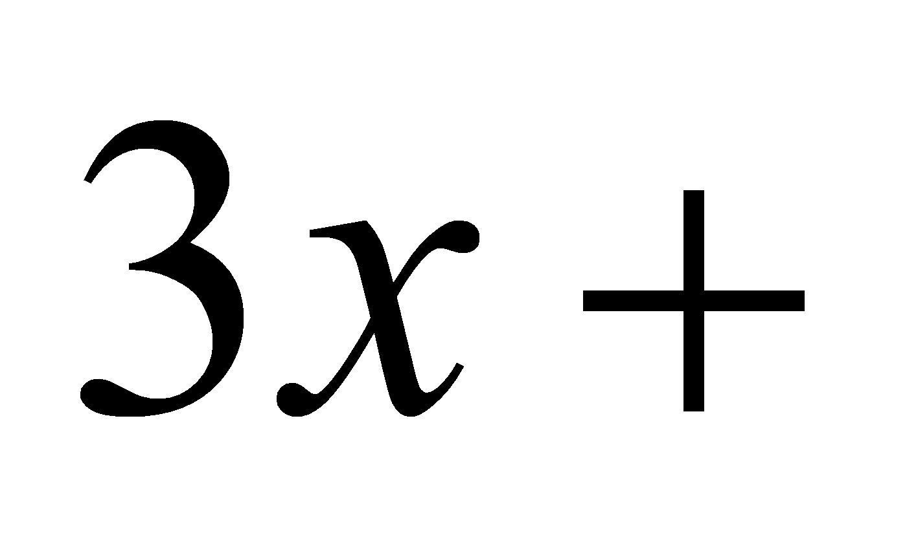
 ．
．12．小李在解方程 时，误将
时，误将 看作
看作 ，解得方程的解
，解得方程的解 ，则
，则 ．
．
13．已知是关于x的一元一次方程 的解，则
的解，则
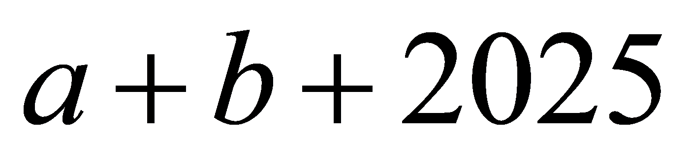
的值为 ．14．如图是一个正方体的展开图，标注了字母 的面是正方体的正面，如果正方体的左面与右面所标注的式子的值相等，
的面是正方体的正面，如果正方体的左面与右面所标注的式子的值相等， ．
．

15．将四个数、 、
、 、
、 排列成
排列成 ，并且规定
，并且规定 ，若
，若
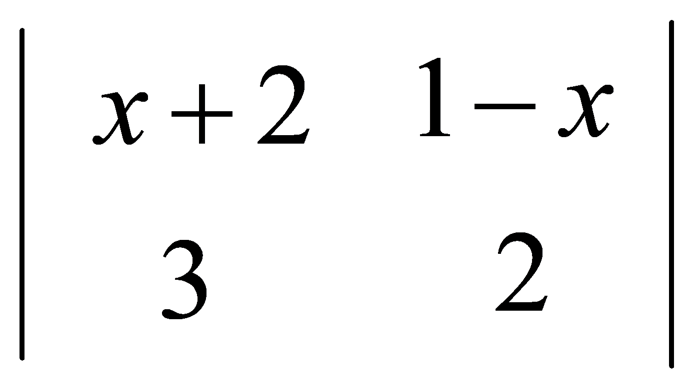
的值为，则的值为 16．按下面程序计算，若开始输入的值为正整数，最后输出的结果为656，则满足条件所有的值是 ．

三、解答题（第17，18，19，20题，每题6分；第21，22，23题，每题8分；第24，25题，每题12分；共9小题，共72分）
17．解方程：
(1) ； (2)
； (2)
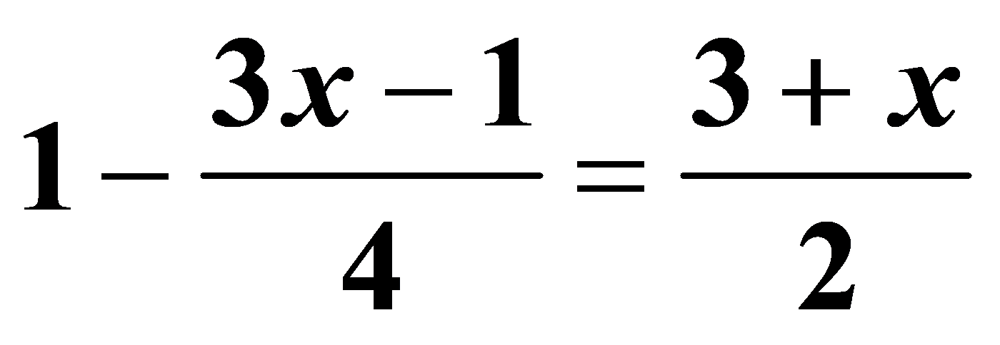
18．对于有理数 定义一种新运算“※”，规定：
定义一种新运算“※”，规定： ，例如：
，例如：
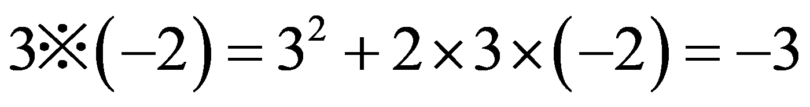
．(1)求
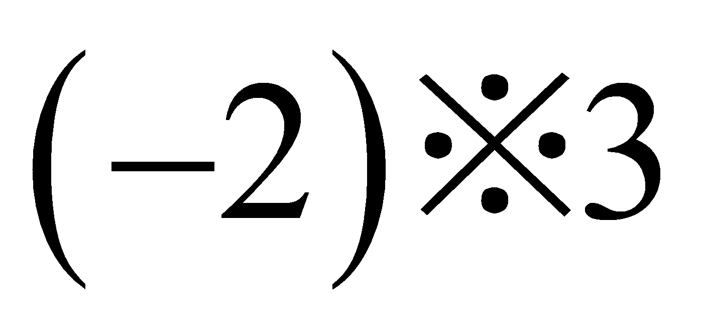
的值；(2)若 ，求的值．
，求的值．
19．小明与小红两位同学解方程
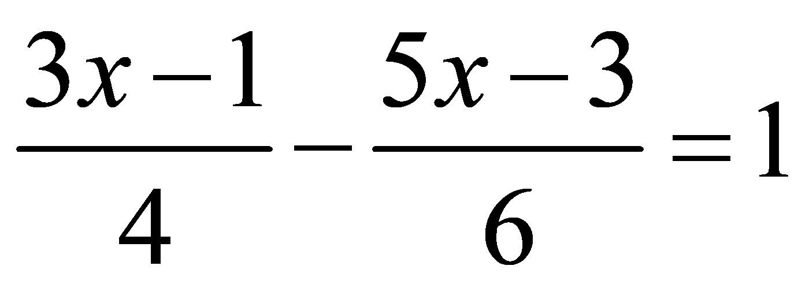
的过程如下：小明： 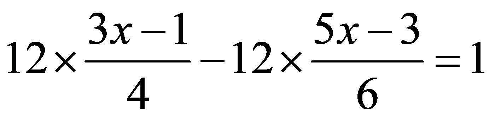 （第一步）
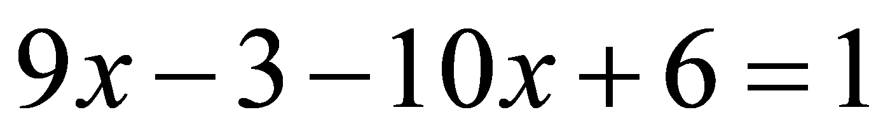 （第三步）
| 小红： 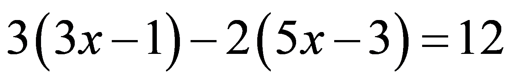 （第一步）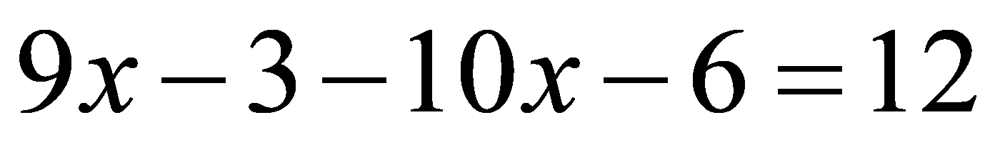 （第二步）
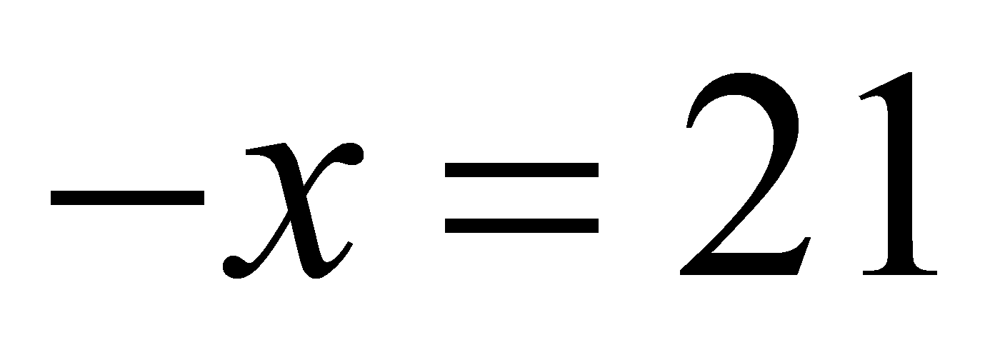 （第四步）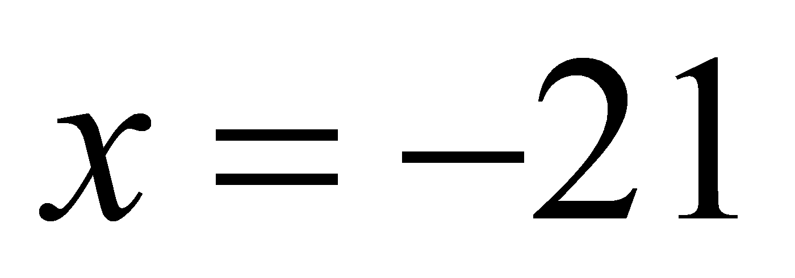 （第五步） |
 （第二步）
（第二步） （第四步）
（第四步） （第三步）
（第三步）(1)小明与小红在解方程中均出现了错误；
小明出错的步骤是第___________步、小红出错的步骤是第___________步；
(2)写出正确的解答过程．
20．《九章算术》中有这样一段记载：今有善行者行一百步，不善行者行六十步．大意为：同样时间内，走路快的人能走100步，走路慢的人只能走60步．假定两者步长相等，据此回答以下问题：
(1)走路慢的人先走100步，走路快的人开始追赶，当走路慢的人再走600步时，请问谁在前面？两人相隔多少步？
(2)走路慢的人先走200步，走路快的人走多少步才能追上走路慢的人？
21．定义运算：
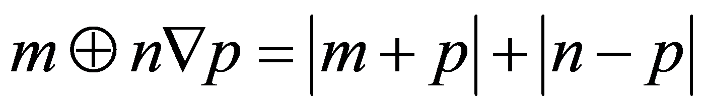
．例如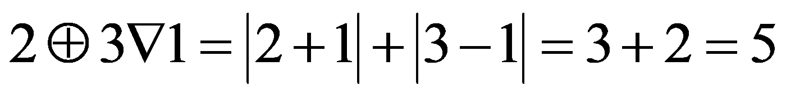
．(1)计算
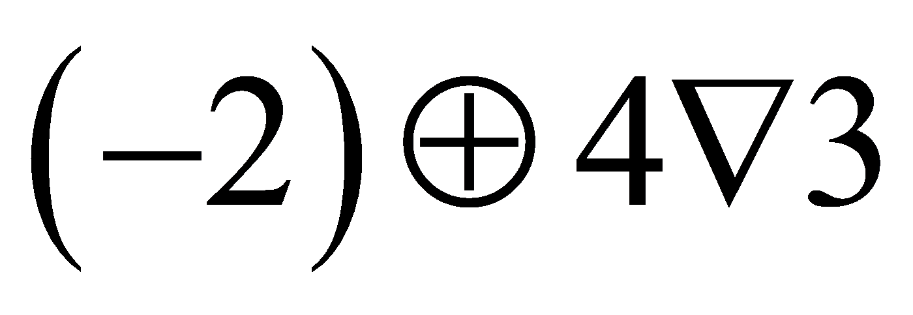
；(2)已知
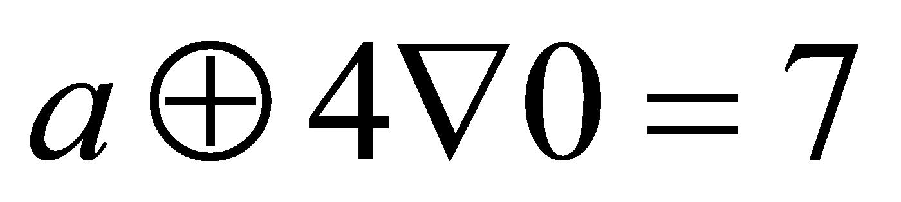
，且为整数，求的值．(3)在数轴上，点 对应的数分别是
对应的数分别是 ，已知
，已知
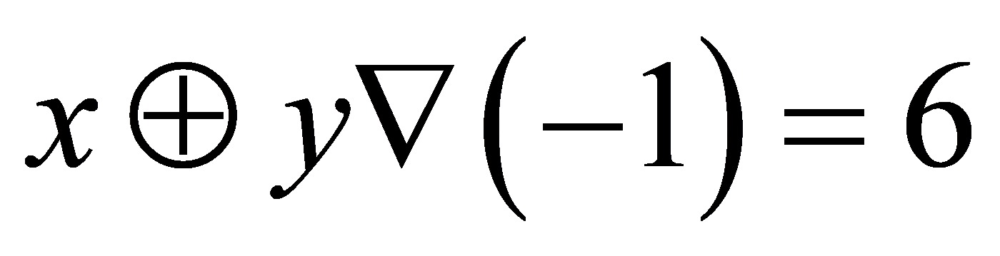
，且 ，求
，求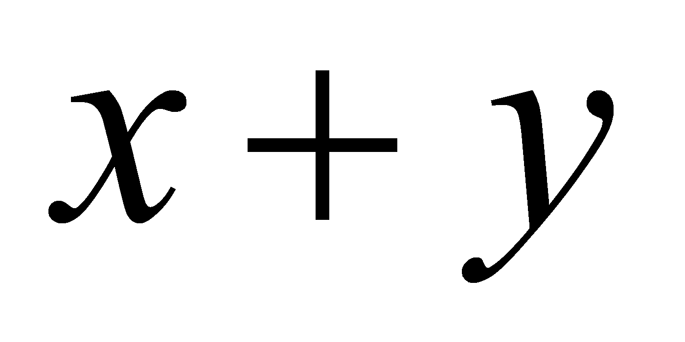
的值．22．工业园区某机械厂的一个车间主要负责生产大小齿轮，该车间有工人85人，其中女生人数比男生人数的2倍少8人，每个工人平均每天可以生产大齿轮16个或者小齿轮10个．
(1)请问该车间有男生、女生各多少人？
(2)已知2个大齿轮与3个小齿轮配套，为使每天生产的大小齿轮恰好配套，应该分配多少工人负责生产大齿轮，多少工人负责生产小齿轮？
23．某体育用品商店用7800元购进一批篮球和排球，其中排球的进货数量比篮球的2倍多20个，篮球、排球每个的进价和售价如表：
篮球 | 排球 | |
进价（元/件） | 60 | 40 |
售价（元/件） | 100 | 60 |
(1)该超市购进篮球和排球各多少个？
(2)该超市若按该售价将这批球类全部卖完后一共可获得多少利润？（注：利润=售价-进价）
(3)某学校准备到该体育用品商量购买篮球和排球共22个，该体育用品商店给出以下两种优惠方案：
方案一：两种球类售价都打8折；方案二：购买2个篮球赠送一个排球．
学校根据购买清单，通过计算发现两种方案的购买总价是一样的．请你求出学校准备购买篮球和排球各多少个？
24．综合与实践
【课本再现】
二中七年级某班在学习第四章《整式的加减》时，通过“数学活动”探究了月历中数字之间的关系和变化规律．

【观察发现】
如图1是 年
年 月的月历，小明用“十”字框框中
月的月历，小明用“十”字框框中 个数．
个数．
（1）这个数中，最小数与最大数的差是______；
（2）小明发现当“十”字框任意移动时，框中的个数之和始终是的倍数，请通过计算说明他的发现成立．
【拓展延伸】
（3）小明用图2的“凹”字框在图1月历中任意框中个数，将这个数分别用字母，，，， 表示．这个数的和能等于
表示．这个数的和能等于 吗？若能，求出这个数；若不能，请说明理由．
吗？若能，求出这个数；若不能，请说明理由．
25．阅读理解，完成下列各题：
定义：已知、 、
、 为数轴上任意三点，若点到点的距离是它到点的距离的3倍，则称点是
为数轴上任意三点，若点到点的距离是它到点的距离的3倍，则称点是 的3倍点．例如：如图1，点是的3倍点，点
的3倍点．例如：如图1，点是的3倍点，点
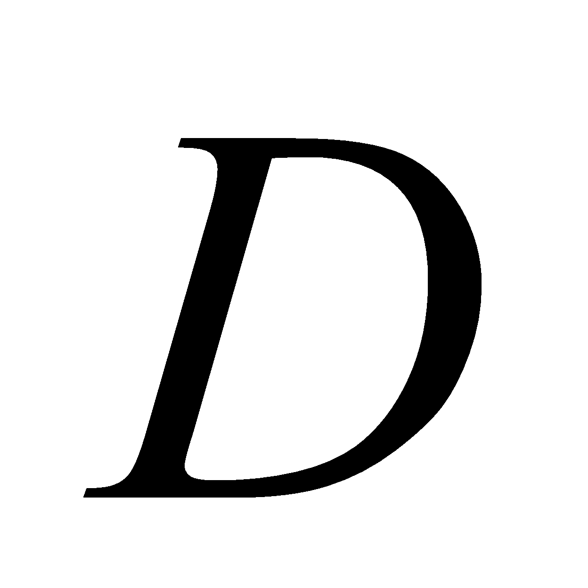
不是的3倍点，但点是 的3倍点，根据这个定义解决下面问题：
的3倍点，根据这个定义解决下面问题：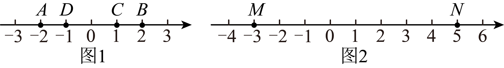
(1)在图1中，点_____ 的3倍点（填写“是”或“不是”）：
的3倍点（填写“是”或“不是”）： 的3倍点是点_____（填写或B或C或D）：
的3倍点是点_____（填写或B或C或D）：
(2)如图2， 、
、 为数轴上两点，点表示的数是，点表示的数是5，若点
为数轴上两点，点表示的数是，点表示的数是5，若点 是
是 的3倍点，则点表示的数是_____；
的3倍点，则点表示的数是_____；
(3)若数轴上点A表示的数为，点B表示的数为，点C表示的数为9，若点A，点B分别以每秒1个单位长度，每秒2个单位长度同时在数轴上向右运动． 秒后，点是
秒后，点是
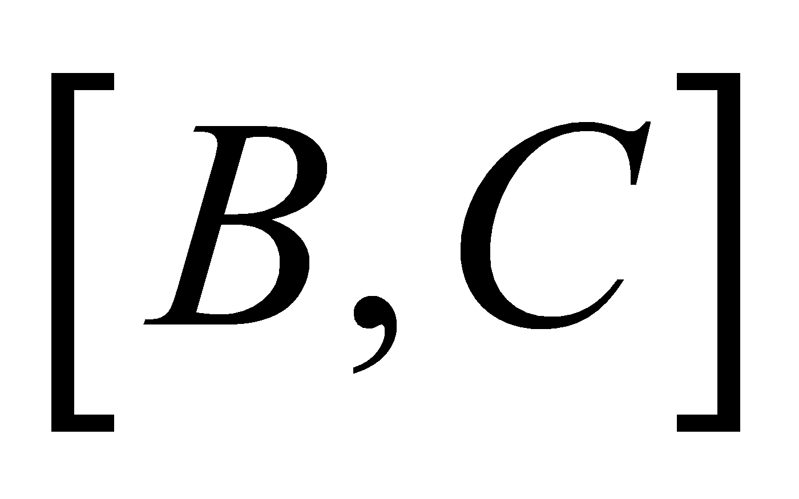
的3倍点，求的值．